🐶 Perros
Son leales, sociables y excelentes compañeros. Necesitan ejercicio, paseos y mucha interacción.

🐱 Gatos
Independientes, limpios y cariñosos. Son ideales para departamentos y espacios pequeños.

🐹 Hámsters
Pequeños y fáciles de cuidar. Requieren poco espacio y son excelentes para principiantes.
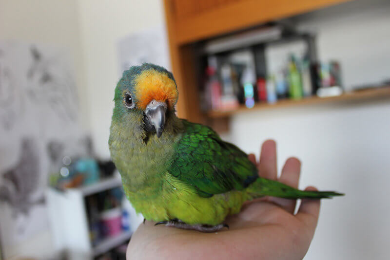
🦜 Aves
Coloridas e inteligentes. Algunas especies pueden imitar sonidos y palabras.

🐍 Reptiles
Mascotas fascinantes que requieren cuidados específicos de temperatura, iluminación y alimentación.
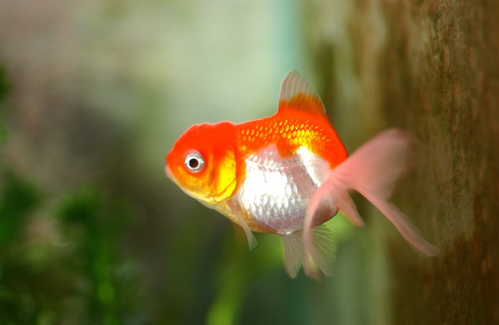
🐠 Peces
Tranquilos y decorativos. Requieren un acuario adecuado y mantenimiento regular.
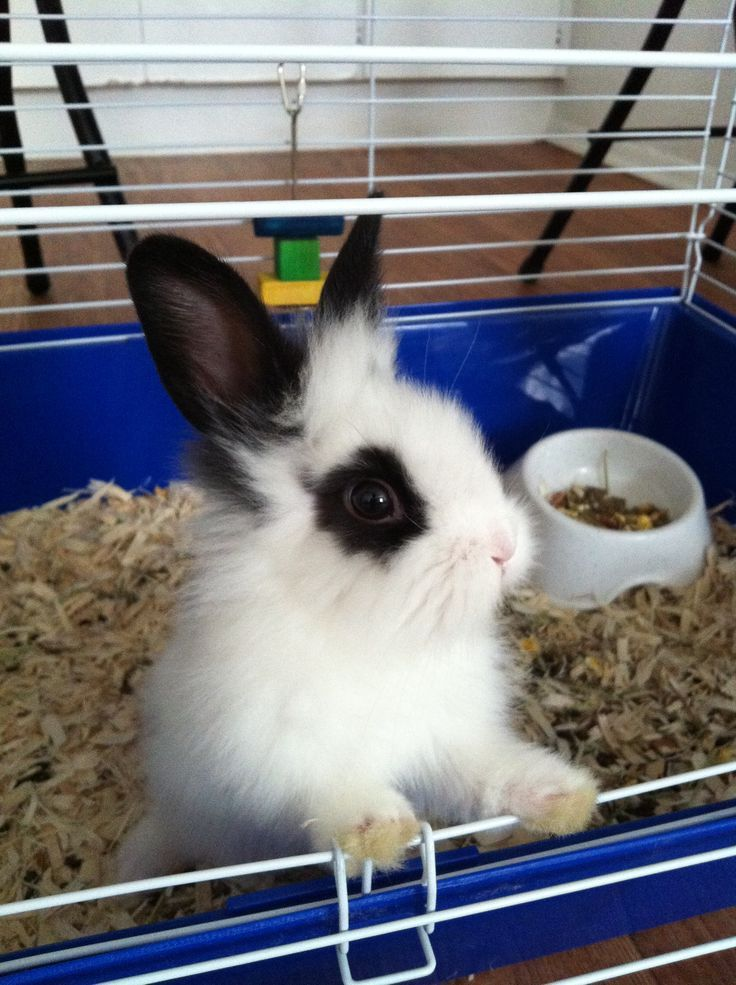
🐇 Conejos
Suaves y juguetones. Necesitan espacio para moverse y una dieta balanceada.
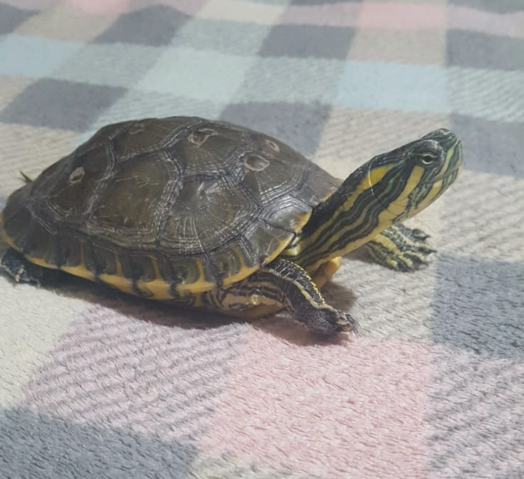
🐢 Tortugas
Lentas pero longevas. Requieren un hábitat adecuado y cuidados específicos.
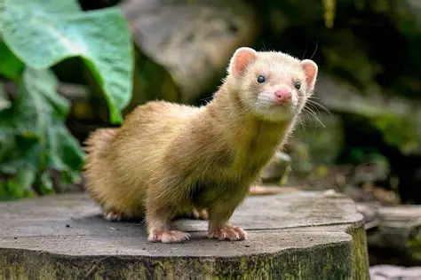
🦦 Hurones
Curiosos y juguetones. Necesitan interacción diaria y un espacio seguro para explorar.
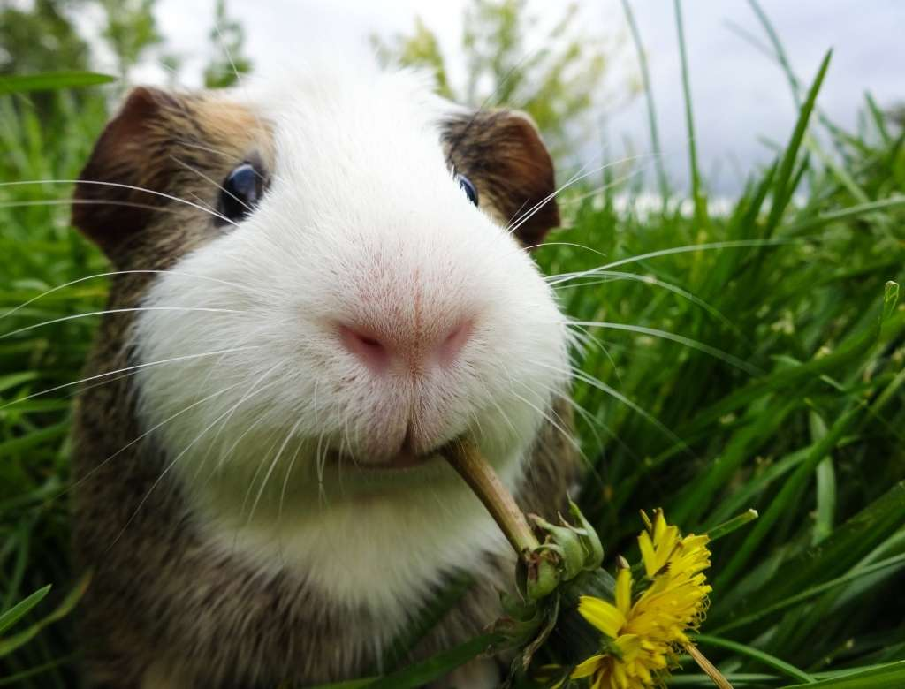
🐹 Cobayas
Sociables y fáciles de cuidar. Son ideales para familias y requieren una dieta rica en vitamina C.
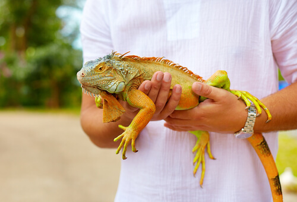
🦎 Iguanas
Reptiles grandes y exóticos. Necesitan un terrario amplio y cuidados especializados.
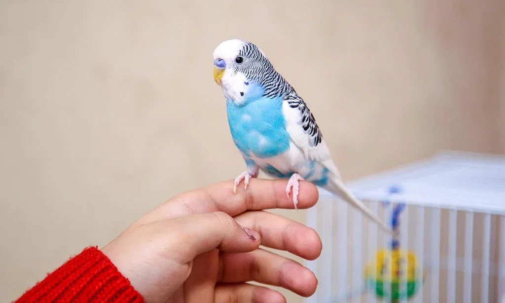
🐦 Periquitos
Pequeños y coloridos. Son sociables y pueden aprender a imitar sonidos.
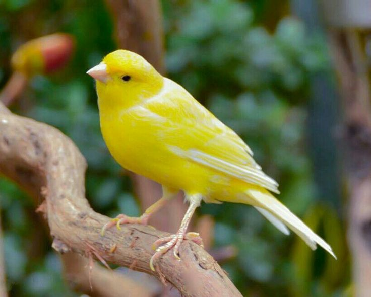
🐦 Canarios
Cantores y alegres. Requieren una jaula adecuada y cuidados básicos de alimentación.
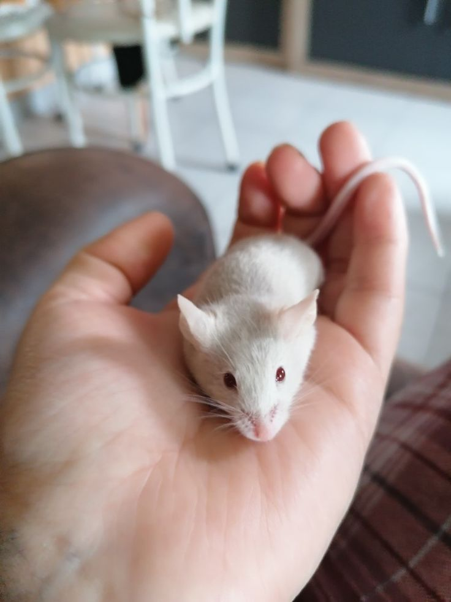
🐭 Ratones
Pequeños y curiosos. Son fáciles de cuidar y requieren un espacio seguro para explorar.
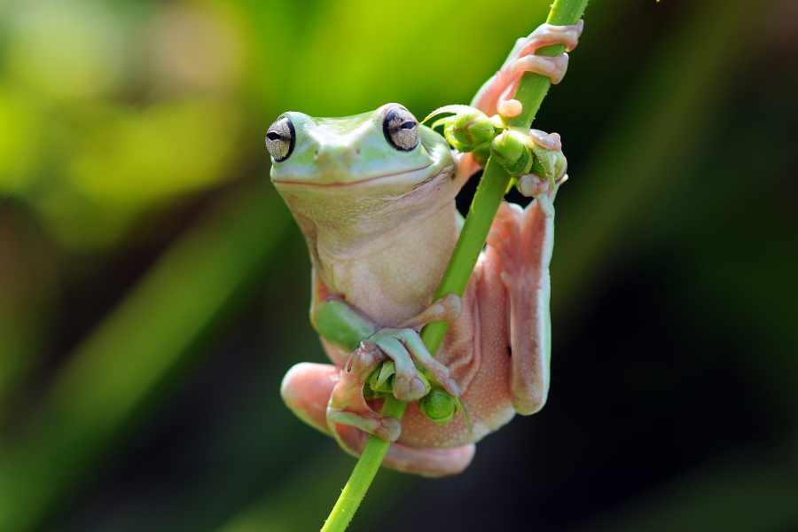
🐸 Ranas
Curiosas y juguetonas. Necesitan interacción diaria y un espacio seguro para explorar.
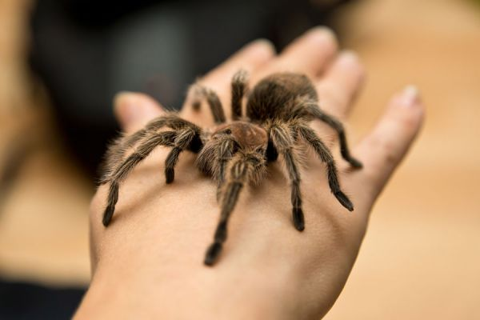
🕷️ Arañas
Pequeñas y fascinantes. Requieren un hábitat adecuado y cuidados específicos.
| Mascota | Espacio | Atención | Dificultad | Ideal para |
|---|---|---|---|---|
| 🐶 Perro | Alto | Alta | 🟡 Intermedia | Personas activas |
| 🐱 Gato | Medio | Media | 🟢 Fácil | Apartamentos |
| 🐹 Hámster | Bajo | Baja | 🟢 Fácil | Principiantes |
| 🦜 Ave | Medio | Media | 🟡 Intermedia | Amantes de las aves |
| 🐍 Reptil | Medio | Alta | 🔴 Avanzada | Personas con experiencia |
| 🐠 Pez | Bajo | Baja | 🟢 Fácil | Espacios reducidos |
| 🐇 Conejo | Medio | Media | 🟡 Intermedia | Familias |
| 🐢 Tortuga | Medio | Baja | 🟡 Intermedia | Personas tranquilas |
| 🦦 Hurón | Medio | Alta | 🔴 Avanzada | Dueños experimentados |
| 🐹 Cobaya | Medio | Media | 🟢 Fácil | Niños y familias |
| 🦎 Iguana | Alto | Alta | 🔴 Avanzada | Amantes de reptiles |
| 🐦 Periquito | Bajo | Media | 🟡 Intermedia | Primeras mascotas |
| 🐤 Canario | Bajo | Baja | 🟢 Fácil | Personas que buscan compañía |
| 🐭 Ratón | Bajo | Baja | 🟢 Fácil | Principiantes |
| 🐸 Rana | Medio | Media | 🟡 Intermedia | Amantes de anfibios |
| 🕷️ Araña | Bajo | Baja | 🔴 Avanzada | Aficionados a animales exóticos |
🟢 Fácil | 🟡 Intermedia | 🔴 Avanzada